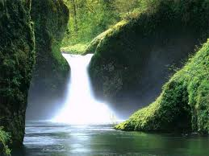

sepia(amount):like old photographs
saturate(amount):
This applies a color saturation effect to the colors which makes them look more vivid. It’s a cool effect that can make photos look like posters or cartoons.This effect also allows you to use a value greater than 100% to really emphasize the saturation.
hue-rotate(angle):
This one is a bit of a color geek effect that can be used for interesting results. What it does is shift the colors around to make an input image look completely different.
